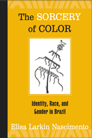

An examination of how racial and gender hierarchies are intertwined in Brazil
An examination of how racial and gender hierarchies are intertwined in Brazil


 An examination of how racial and gender hierarchies are intertwined in Brazil
An examination of how racial and gender hierarchies are intertwined in Brazil

|  |
The Sorcery of ColorIdentity, Race, and Gender in BrazilElisa Larkin Nascimentopaper EAN: 978-1-59213-351-2 (ISBN: 1-59213-351-7) |
"This book presents the reader with new and original scholarship both in comparative racial studies and comparative feminist thought. Nascimento also presents an incalculable historical analysis of the growth and dynamic nature of the Afro-Brazilian protest movement during the twentieth-century."
—J. Michael Turner, Hunter College
Originally published in 2003 in Portuguese, The Sorcery of Color argues that there are longstanding and deeply-rooted relationships between racial and gender inequalities in Brazil. In this pioneering book, Elisa Larkin Nascimento examines the social and cultural movements that have attempted, since the early twentieth century, to challenge and eradicate these conjoined inequalities.
The book's title describes the social sleight-of-hand that disguises the realities of Brazilian racial inequity. According to Nascimento, anyone who speaks of racism—or merely refers to another person as black—traditionally is seen as racist. The only acceptably non-racist attitude is silence. At the same time, Afro-Brazilian culture and history have been so overshadowed by the idea of a general "Brazilian identity" that to call attention to them is also to risk being labeled racist.
Incorporating leading international scholarship on Pan Africanism and Afrocentric philosophy with the writing of Brazilian scholars, Nascimento presents a compelling feminist argument against the prevailing policy that denies the importance of race in favor of a purposefully vague concept of ethnicity confused with color.
Excerpt available at www.temple.edu/tempress
"This is an extremely thoughtful and challenging study of the overlapping and often confusing histories of identity, race, and gender in Brazil....This book has considerable appeal as history and theory...Highly Recommended."
—Choice
"The book is explicitly devoted to making a huge theoretical and historical review of the position of black people in Brazil, as well as of their fights for justice and recognition, and in this it has been particularly successful. Placing herself on these crossroads, blessed by Esu, the author produces an intellectual position complimented by her political engagement, and makes a political statement by means of her intellectual criticism. This intellectual enterprise is of great importance at this moment when Brazil is undergoing unprecedented progressive polarization regarding the implementation of affirmative action policies. "
—The European Review of Latin American and Caribbean Studies
�[More persuasive...is] Larkin Nascimento�s informative account of the myriad institutional forms through which Afro-Brazilians mobilized over the course of the 1900s very few of whom called for a return to their African heritage�Also useful is a chapter on the psychology of Brazilian racism[.]"
—Journal of Latin American Studies
Acknowledgments
List of Tables
List of Abbreviations
Introduction to the English Edition
Preface – Kabengele Munanga
Introduction
1. Identity, Race, and Gender
2. Brazil and the Making of "Virtual Whiteness"
3. Constructing and Desconstructing the "Crazy Creole"
4. Another History: Afro-Brazilian Agency (S�o Paulo and Rio de Janeiro, 1914-1960)
5. The Black Experimental Theater: Plots, Texts, and Actors
Glossary of Brazilian Words
Bibliographical References
 | Elisa Larkin Nascimento is Director of IPEAFRO Afro-Brazilian Studies and Research Institute, Rio de Janeiro, Brazil. |
Latin American/Caribbean Studies
Gender Studies
Race and Ethnicity
© 2015 Temple University. All Rights Reserved. This page: http://www.temple.edu/tempress/titles/1786_reg.html.